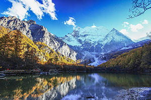

稻城亚丁风景区位于四川省甘孜藏族自治州稻城县香格里拉镇亚丁村境内，主要由“仙乃日、央迈勇、夏诺多吉”三座神山和周围的河流、湖泊和高山草甸组成，它的景致保持着在地球上近绝迹的纯粹，因其独特的地貌和原生态的自然风光，被誉为“香格里拉之魂”和“最后的香格里拉”，被国际友人誉为“水蓝色星球上的最后一片净土”，是摄影爱好者的天堂。
目前成都到稻城亚丁旅游有2条路线可以走:
一、成都——雅安——康定——新都桥——雅江——理塘——稻城——亚丁，全程约810公里。其中成都至雅安高速公路约140公里。雅安至新都桥是318国道，新都桥至稻城336公里为柏油路面。稻城至亚丁110公里，其中73公里的柏油路面，37公里的土路。
二、成都——都江堰——映秀镇——卧龙——四姑娘山——丹巴——八美——新都桥——雅江——理塘——稻城——亚丁。路况一般，中途需要翻越巴郎山垭口，路面基本是柏油路面。
路线地图
首先，大家公认，秋季的稻城亚丁是最美丽的，那是因为无论是从气候、 景色来说，都是最适合前往稻城亚丁旅游的，秋季的稻城亚丁及沿途草原风景都很美丽，尤其是色彩，令人陶醉。但高原的秋季非常短暂，这是最令人遗憾的。
春季的稻城亚丁，景色也不错，各种山花竞相开放，为高原带来了春的气息，略显不足的是气候偏冷，时有春雨侵袭。
夏天的稻城亚丁高原本应是令人向往的，气候也较适宜，草原景色一片青翠，可惜适逢雨季，往往令游人万分扫兴。
在一般人的印象中，冬天一定是大雪封山，景区关闭了。其实大雪封山仅是一个概念，因为以前道路状况很差，遇到下雪天气就容易将路封住，一般汽车很难通行，但在现有的道路状况下，要能够真正卦山的大雪还是很少见的，其实冬天从成都通往稻城的交通就从来没有中断过，只是没有直达班车，而需要一段一段的乘车。
冬天稻城、亚丁的气候：
冬季的高原很少下雨，白天往往都是大晴天，艳阳高照，有时在阳光下的温度可达20度以上。
但夜晚较冷，最低的时候可达零下十几度，但不要惊慌，这通常是指的半夜或零晨的温度，只要你不是夜猫子，一般不用担心。一般来说11-12月的温度还不会太冷，过了12月就容易有下雪天气了。
前往稻城亚丁的路况：
从成都到稻城约800来公理，现在全通了柏油路，路况还是不错的。但沿途城要翻越几座海拨4000多米的雪山，这些雪山顶就是人们常说的大雪封山有可能发生的地方，但在初冬一般影响不大，往往是2-3月开始融雪的时候倒是比较危险，但平常需要防止雪山上的暗冰，这些暗冰往往不容易被发现，还好，公路上一般都有提醒。
从稻城到亚丁约110公路。现在路基比较宽，路况也还不错，只要小心驾驶，注意防滑，一般问题不大。
大自然是多样的，也是丰富多彩的，包括冬季的风光。冬季的高原更多的是苍茫，黄灿灿的草原，还有耀眼的阳光，夜晚灿烂的星光。
食宿条件:
吃的条件变化不大，但住宿需要特别注意。
沿途均有较好的住宿，但亚丁景区由于比较冷，而且只有寺庙可提供住宿，也可自带帐篷，但由于夜晚天气较寒，景区又不准生火，所以12月以后最好不要住在景区内。一般选择住在景区门口的藏民家里或者干脆住到距景区还有几十公理的日瓦乡里，比较保暖并且安全。